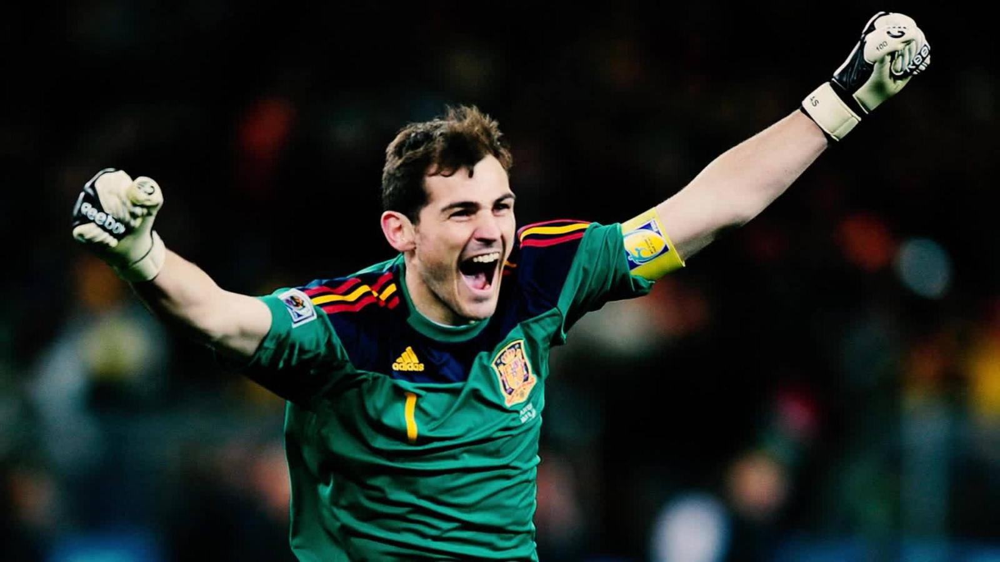

Alineación |
 |
|
BIOGRAFÍA Iker Casillas Fernández es un exfutbolista español que jugaba como portero.Fue internacional absoluto con la selección española desde 2000 hasta 2016, de la cual fue su capitán desde 2006 hasta 2016. Es el segundo internacional español con más partidos de la historia y el decimoquinto a nivel mundial con 167. Estadísticas en el Mundial 7 Partidos jugados2 Goles Encajados 33 Paradas 1 Penalti Parado |
|
LATERAL DERECHO |
|
CENTRAL DERECHO |
|
CENTRAL IZQUIERDO |
|
LATERAL IZQUIERDO |